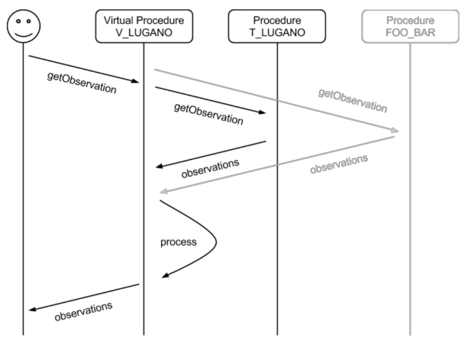

Virtual procedures¶
With Virtual Procedures you are able to use other procedures data (real or virtual) and manipulate data to get a different result.
Let‟s try something simple: we can create a procedure that get data from a sensor measuring temperature in Celsius degree (T_LUGANO) and transform it to Fahrenheit degree (V_LUGANO).
Conversion formulae: °F = °C × 1,8 + 32
Registering a new virtual procedure¶
Use the “Copy configuration from an existing procedure” to copy metadata from T_LUGANO
Then change the following fields with these values:
Name: V_LUGANO
Description: temperature in fahrenheit degree calculated from T_LUGANO
System type: virtual
Sensor type: virtual procedure
Remove the temperature copied that is in the Outputs field, and then add the desired observed properties using the “add” button.
Observed property: urn:ogc:def:parameter:x-istsos:1.0:meteo:air:temperature
Unit of measure: °F
Note
Unit of Mesure can be created on the fly. Click on the Unit of measure link

Finally register the new sensor (procedure) pressing the “submit” button.
Configuring¶
Go to Virtual Procedure panel and prepare to write the code in the editor:
from istsoslib.responders.GOresponse import VirtualProcess
class istvp(VirtualProcess):
procedures = {
"T_LUGANO": "urn:ogc:def:parameter:x-istsos:1.0:meteo:air:temperature"
}
def execute(self):
data = self.getData("T_LUGANO")
out=[]
for idx in range(len(data)):
rec = data[idx]
if self.filter.qualityIndex == True:
out.append([rec[0], self.convert(rec[1]), rec[2]])
else:
out.append([rec[0], self.convert(rec[1])])
return out
def convert(self, celsius):
if celsius is None:
return -999.9
return (float(celsius) *1.8 + 32)
Testing¶
Test your new Virtual procedure executing a getObservation request here
Warning
When working with VP it‟s easy to make some mistakes while coding.. So while testing your VP look at the apache error log to read about errors:
tail -f /var/log/apache2/error.log
If something goes wrong or you do some modification on your code, you should also restart the apache server.
sudo service apache2 restart
Registering a water discharge virtual procedure¶
Use the “Copy configuration from an existing procedure” to copy metadata from A_GNOSCA

Then change the following fields:
Name: V_GNOSCA
Description: water discharge calculated from RH_GNOSCA
System type: virtual
Sensor type: virtual procedure
Remove the observed properties copied that is in the Outputs field, and then add the desired observed properties using the “add” button.
Observed property: urn:ogc:def:parameter:x-istsos:1.0:river:water:discharge
Unit of measure: m3/s
Note
Unit of Mesure can be created on the fly. Click on the Unit of measure link
Finally register the new sensor (procedure) pressing the “submit” button.
Configuring¶
Go to Virtual Procedure panel and prepare to write the code in the editor:
from istsoslib.responders.GOresponse import VirtualProcessHQ
class istvp(VirtualProcessHQ):
procedures = {
"RH_GNOSCA": "urn:ogc:def:parameter:x-istsos:1.0:river:water:height"
}
Select the “Rating curve” tap panel and insert the following values:

Press the “Store the File” button to save the rating curve configuration data.
Testing¶
Execute a getObservation request
http://localhost/istsos/demo?
service=SOS&
version=1.0.0&
request=GetObservation&
offering=temporary&
procedure=V_GNOSCA&
eventTime=2014-06-02T00:00:00+01:00/2014-06-03T00:00:00+01:00&
observedProperty=discharge&
responseFormat=text/plain
Creating a reference evapotranspiration virtual procedure¶
Evapotranspiration is an important parameter that takes part in the water balance assessment, and therefore in any attempt to calculate and predict plant water needs and optimized irrigation. The FP7 project ENORASIS uses evapotranspiration as one of the component to feed the innovative advanced algorithms and optimization processes leading to irrigation optimized scheduling.
Note
A possible approach it to assess water needs by using a daily water balance calculation considering rainfall and irrigations as the water inputs and crop evapotranspiration (ETc ) as the loss. The water balance for a particular irrigation block, in millimetres, can then be calculated using the formula:
WB = R + I - ETc
- Where:
- WB = water balance (mm)
- R = rainfall depth (mm)
- I = irrigation volumes (mm/area)
- ETc = crop evapotranspiration (mm/area)
In this approach, the water balance does not include water stored in the soil profile. This is a simplification but it avoids the difficulty of trying to build a complex system reliant on accurate soil moisture accounting, that in many circumstances adds little benefit as the other agronomic or cultural preferences are unknown. In contrast to ENORASIS, a system operating in this mode does therefore not tell irrigators when and how much to irrigate, but provides an indication on how much water the crop has used since last irrigation. The decision when to irrigate is up to the grower based upon all the agronomic, economic and social/cultural considerations.
- Create a virtual procedure named GRABOW_ETP observing Evapotranspiration

Configuring¶
- Download FAO56.py and copy the FAO56 python function in the virtual procedure folder
sudo cp Desktop/dataset/FAO56.py /usr/local/istsos/services/demo/virtual/GRABOW_ETP
3) Open the file and note the function ET0 which calculate evapotranspiration from a number of inputs:
'''
=======================================================================
Potential evaporation functions using Penman-Montheit with hourly data
=======================================================================
'''
def ET0(isodate,T,RH,u2,Rs,lat,lon,z,P=None,verbose=False):
"""
Input:
isodate: (str) iso datetime in UTC
T: (float) hourly air temperature at 2m [Celsius]
RH: (float) hourly relative air humidity [Pa]
u2: (float) hourly wind speed at 2 m [m/s]
Rs: (float) hourly incoming solar radiation [J/m2/hour]
lat: (float) latitude of the measurement point [decimal degree]
lon: (float) longitude of the measurement point [decimal degree]
z: (float) altitude above sea level of the measurement point [m]
P: (float) hourly air pressure [Pa] (Opzional)
Output:
- ET0: (float) hourly reference evapotranspiration [mm/h]
Examples::
>>> import FAO56
>>> FAO56.ET0(isodate="2012-10-01T02:00Z",T=28,RH=90,u2=1.9,
Rs=0,lat=16.21,lon=-16.26,z=8)
>>>
>>> FAO56.ET0(isodate="2012-10-01T14:00Z",T=38,RH=52,u2=3.3,
Rs=2.450,lat=16.21,lon=-16.26,z=8)
>>> 0.626874880652
References:
http://www.fao.org/docrep/X0490E/x0490e00.htm#Contents
Authors:
Massimiliano Cannata, SUPSI
Original author:
Maarten J. Waterloo <maarten.waterloo@falw.vu.nl>
http://python.hydrology-amsterdam.nl/
"""
- Code the evapotranspiration virtual procedure
# -*- coding: utf-8 -*-
# import
from istsoslib.responders.GOresponse import VirtualProcess
import FAO56
class istvp(VirtualProcess):
procedures = {
"GRABOW": [
"urn:ogc:def:parameter:x-istsos:1.0:meteo:air:temperature",
"urn:ogc:def:parameter:x-istsos:1.0:meteo:air:humidity:relative",
"urn:ogc:def:parameter:x-istsos:1.0:meteo:air:wind:velocity",
"urn:ogc:def:parameter:x-istsos:1.0:meteo:solar:radiation"
]
}
def execute(self):
data = self.getData("GRABOW")
data_out = []
for rec in data:
if self.filter.qualityIndex == True:
# rec is a list:
# [0]=time, [1]=T,[2]=Tqi, [3]=RH,[4]=RHqi,
# [5]=u2,[6]=u2qi, [7]=Rs,[8]=Rsqi
etp = FAO56.ET0(isodate = str(rec[0]),
T=float(rec[1]),
RH=float(rec[3]),
u2=float(rec[5]),
Rs=float(rec[7]*0.0036), # W/m2 to MJ/(m2*h)
lat=22.67,
lon=51.25,
z=177)
data_out.append([rec[0], etp, min([rec[2],rec[4],rec[6],rec[8]])])
else:
# rec is a list: [0]=time,[1]=T,[2]=RH,[3]=u2,[4]=Rs
etp = FAO56.ET0(isodate = str(rec[0]),
T=float(rec[1]),
RH=float(rec[2]),
u2=float(rec[3]),
Rs=float(rec[4]*0.0036),
lat=22.67,
lon=51.25,
z=177)
data_out.append([rec[0], etp])
return data_out
Testing¶
Execute a getObservation request
http://localhost/istsos/demo?
service=SOS&
version=1.0.0&
request=GetObservation&
offering=temporary&
procedure=GRABOW_ETP&
eventTime=2014-06-02T00:00:00+01:00/2014-06-03T00:00:00+01:00&
observedProperty=evapotranspiration&
responseFormat=text/plain